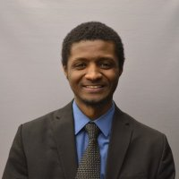
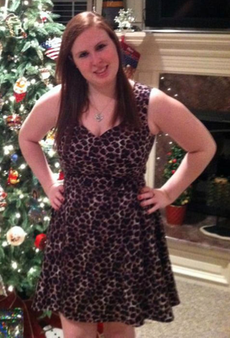

Alexander Cook: cooka3@tcnj.edu
My name is Alexander Cook and I am enrolled as a student in The College of New Jersey's computer engineering program. I am currently a senior and enjoy participating with many cultural clubs on campus. In particular I was on executive board of Chinese Student Association as Webmaster during my junior year. I picked my major because of its flexibility and numerous applications as well as being able to work with the latest and greatest technology. The team aspect of engineering is what really sold me since I find that with more minds, you can accomplish so much more than you can on your own.
Abdoulaye Diallo: dialloa1@tcnj.edu
My name is Abdoulaye Diallo and I am currently a senior studying Electrical Engineering at The College of New Jersey. I take a lot of pride in the work I do and really do like helping others. I am currently heavily involved with an organization called the National Society of Black Engineers (NSBE) whose mission is "To increase the number of culturally responsible black engineers who excel academically, succeed professionally and positively impact the community." Furthermore this mission statement is what I abide by during my time at TCNJ which has led NSBE to ten conferences within the past three years and also with it a growing chapter. I have also been involved in the schools tutoring program, planned a NSBE conference at TCNJ, and participated in the schools Mentored Undergraduate Summer Experience (MUSE).
Kari Gilbertson: gilberk1@tcnj.edu
My name is Kari Gilbertson and I am currently a senior studying Computer Engineering at The College of New Jersey. I am the Webmaster for The College of New Jersey's Chapter of Society of Women Engineers. Our mission is to stimulate women to achieve full potential in careers as engineers and leaders, expand the image of the engineering profession as a positive force in improving the quality of life, and demonstrate the value of diversity. I am interested in mobile applications, in terms of functionality and design, therefore this project is a perfect fit for me. Mobile applications can make a difference, no matter how small. And, I plan on making a difference and helping others along the way. This is exactly what our project entails, helping students and faculty throughout the campus of The College of New Jersey.
Nick Vitone: vitonen1@tcnj.edu
My name is Nicholas Vitone and I am currently enrolled in the electrical engineering program at The College of New Jersey. I am a Founding Father of The College of New Jersey's Delta Tau Delta fraternity. Our chapter's mission is dedication to growth as men and scholars by leading, developing, and serving the community. I have a great interest in technology (specifically mobile technology) so this project really intrigued me. Our project also serves to help both the students and faculty of TCNJ's community.
Larry Pearlstein (Adviser): pearlstl@tcnj.edu